Python pour la data science TD 1 - Rappel des bases


Intro
- Cours
Pythonde Lino Galiana, sous environnement SSP Cloud - Questions à dmarin@open-dc.com
- Programme:
- TD 01 - Rappels de base
- TD 02 -
Numpy,PandasetGeoPandas - TD 03 -
Git - TD 04 - API et webscrapping
- TD 05 - Stockage de données dans le cloud et préparation projet
Environnements Python, gestionnaire de modules et IDE
Pour programmer en Python on a besoin:
d’un exécutable
Python(installé par défaut sur Linux et Mac), à installer sur Windows pour un environnement local.d’un gestionnaire de modules (
pip,conda)d’un environnement de développement: IDE (
VS Code,PyCharm,Spyderetc.)
Cet écosystème peut être local ou dans le cloud (Google Colab, SSP Cloud).
Dans le cadre du cours ==> écosystème cloud sous SSP Cloud avec IDE VS Code.
Note: En pratique on crée un environnement de développement local, avec un environnement virtuel: il s’agit d’un environnement de développement propre au projet, avec ses propres versions de modules, communiquées grâce au fichier requirements.txt.
1ère étape: Création de compte SSP Cloud
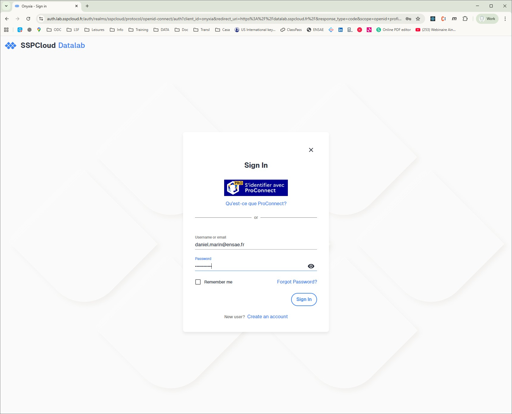
Application: Créer une instance SSP Cloud:
-Se connecter sur le
Datalabdu SSP Cloud
- My Services / + New service
- Lancer un serviceVS Code
- Copier la clé de sécurité dans le presse-papier
- Créer un nouveau notebookjupyter
- Tester les commandes du TD
- Supprimer le service à la fin du TD!
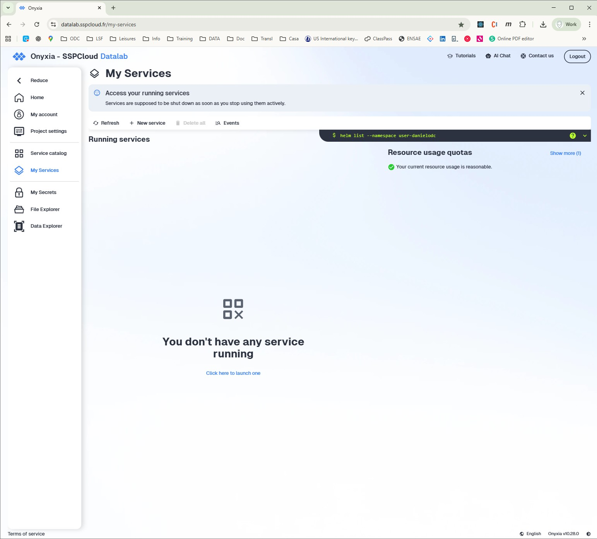
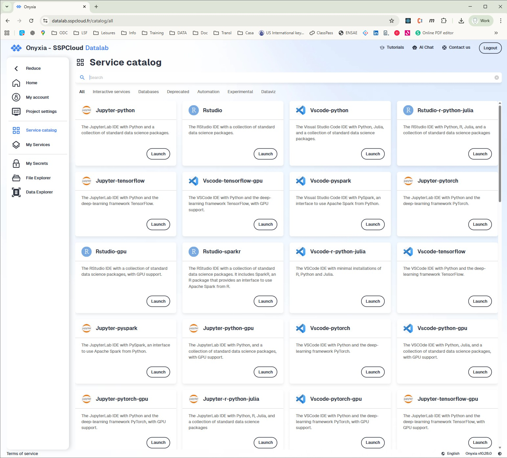
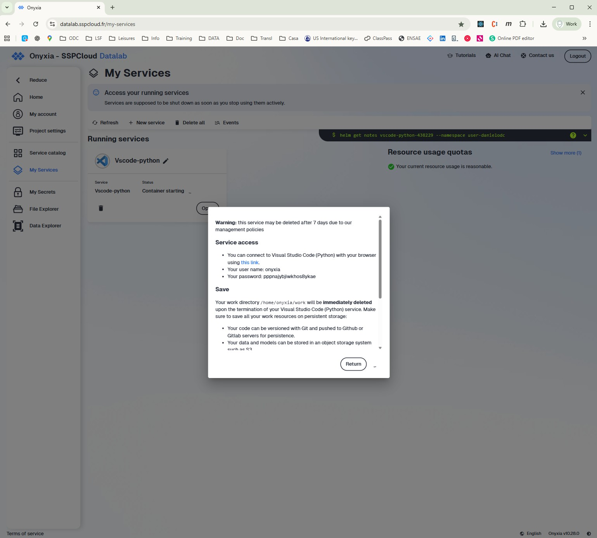
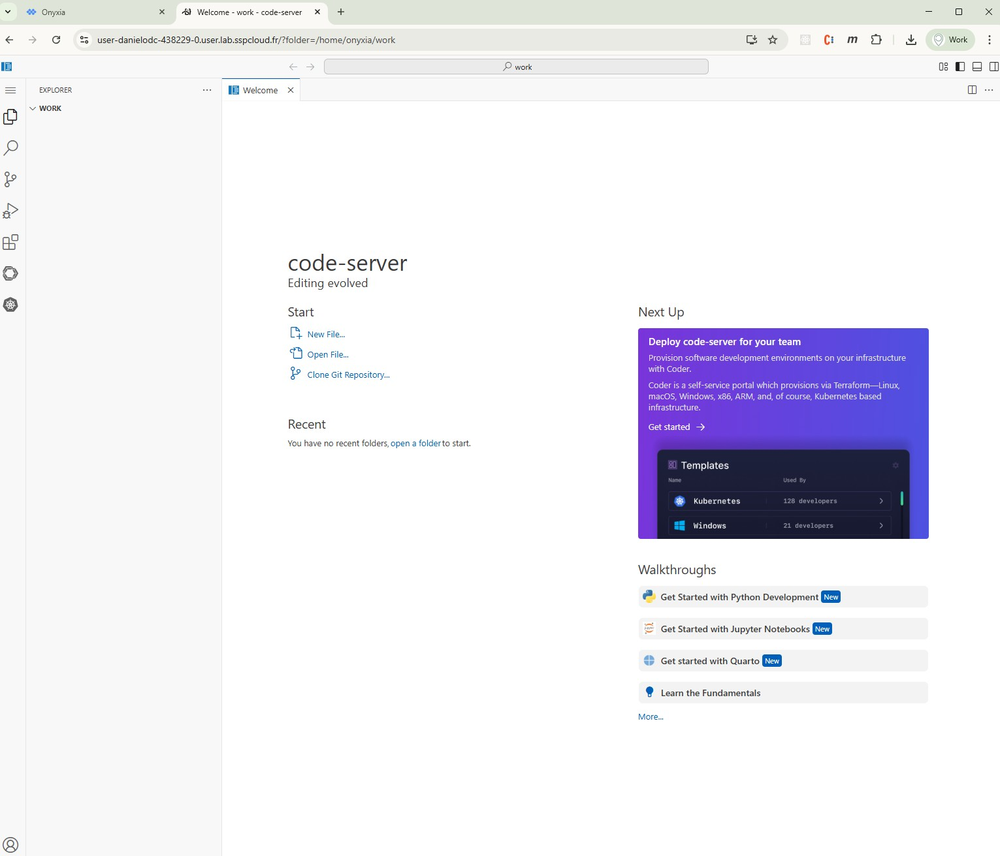
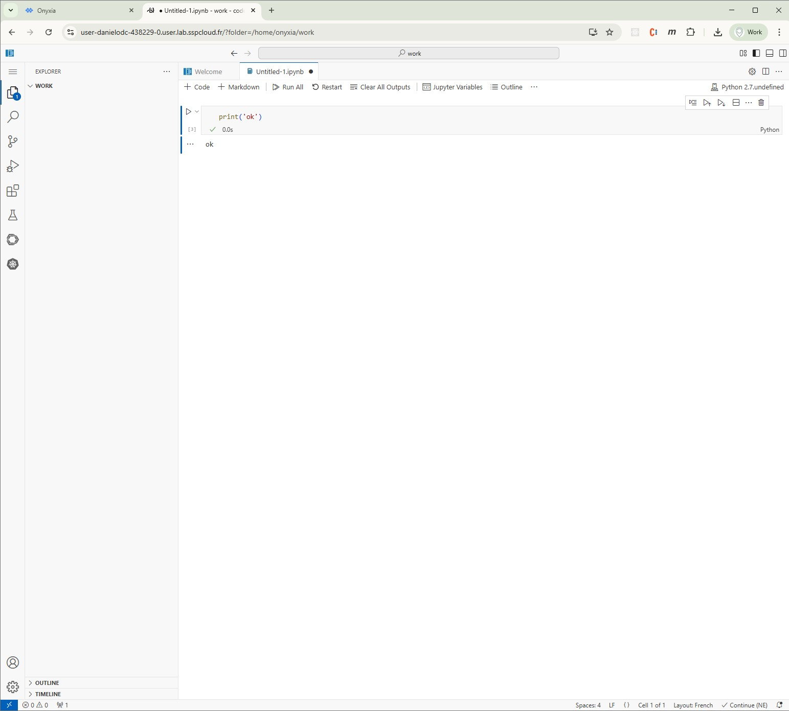
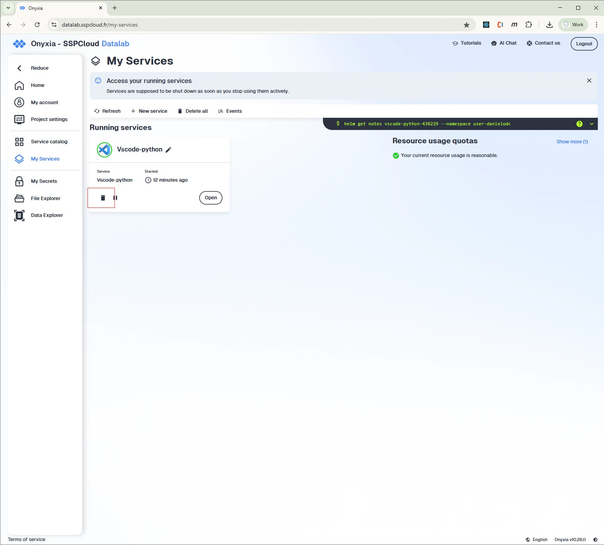
Développer avec les Notebook Jupyter
Jupyter est un environnement interactif qui permet d’écrire et d’exécuter du code (en Python mais aussi en R, Julia etc.), tout en combinant du texte, des images et des visualisations dans un même document.
Il est particulièrement utile pour :
- l’analyse de données et la visualisation,
- l’apprentissage et la pédagogie,
- le prototypage rapide et reproductible.
Il permet à la fois de rédiger du code, d’observer les résultats de sortie et de formatter ses commentaires au moyen de la syntaxe Markdown
Son principal intérêt est de faciliter la compréhension et le partage du travail en mêlant code, résultats et explications dans un format lisible.
Mode édition
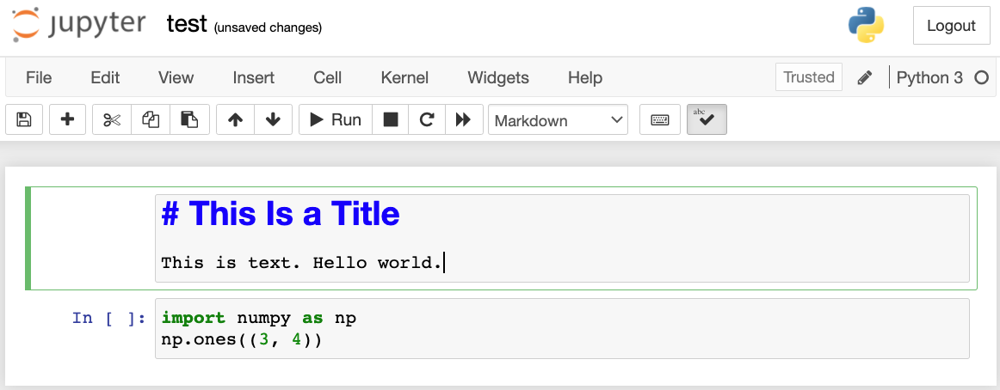
Mode rendu
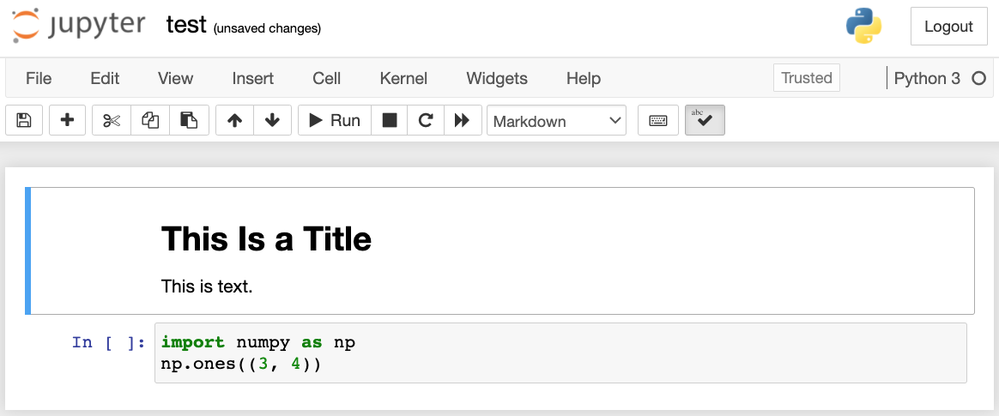
Rapide présentation du format Markdown
- Language de balisage simpifié permettant de générer du code
htmlà partir d’une syntaxe allégée.
- Syntaxe
Markdown:
- Language utilisé sur
GitHubpour la rédaction des fichiersREADME.mdet pour les échanges entre contributeurs. - Language utilisé dans Jupyter pour créer des cellules de commentaires et analyses (à utiliser pour le projet!)
- Permet de générer des pages web de façon rapide et maintenables.
- Utilisé pour la rédaction de ces slides et du cours Python pour la data science.
- Documentation.
Markdown Cheatsheet
| Type | Or … | Get |
|---|---|---|
*Italic* |
_Italic_ |
Italic |
**Bold** |
__Bold__ |
Bold |
# Heading 1 |
Heading 1========= |
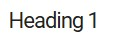 |
## Heading 2 |
Heading 2--------- |
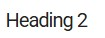 |
[Link](http://a.com) |
[Link][1][1]: http://b.org |
Link |
 |
![Image][1][1]: http://url/b.jpg |
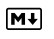 |
> Blockquote |
||
* List* List* List |
- List- List- List |
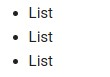 |
1. One2. Two3. Three |
1) One2) Two3) Three |
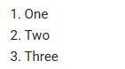 |
horizontal rule --- |
horizontal rule *** |
|
Inline `code` with backticks |
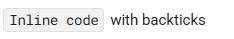 |
|
| ``` # code block print ‘3 backticks or’ print ‘indent 4 spaces’ ``` |
····# code block ····print ‘3 backticks or’ ····print ‘indent 4 spaces’ |
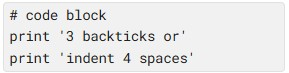 |
Source: https://commonmark.org/help/
Rappel des bases du langage Python
Note: On ne revient pas ici sur les notions de base de programmation telles que les variables, fonctions, boucles, conditions. On se concentre sur les spécificités de Python par rapport aux autres langages.
Types de base
Listes, dictionnaires, tuples et sets
Listes:
li = [2, 3, 4] # liste de 3 éléments
print(f'1ère valeur: {li[0]}') # l'index commence à 0
li.append(5) # ajoute un élément
print(li)
li.extend([6, 7]) # ajoute une liste à la liste
print(li)
li.pop(4) # retire le 4ème élément de la liste (et non l'élément 4 de la liste!)
print(li)
# # boucle sur les éléments:
for el in li:
print(el)
# # boucle avec conservation des index:
for ix, el in enumerate(li):
print(f'index {ix}, valeur: {el}')
# # Comprehension lists:
li = [i for i in range(10) if i%2 == 0]Dictionnaires
Tuples:
Sets:
Ensemble unique d’éléments non-ordonné.
st = {1, 2, 2, 3}
print(st) # pas de doublon dans le set
st.add(4)
st.remove(2) # lève une erreur si absent
st.discard(2) # ne lève pas d'erreur si absent
# Opérations ensemblistes
a = {1, 2, 3}
b = {2, 3, 4}
a | b # union → {1, 2, 3, 4}
a & b # intersection → {2, 3}
a - b # différence → {1}
a ^ b # différence symétrique → {1, 4}
# Comparaisons
a.issubset(b) # a ⊆ b ?
a.issuperset(b) # a ⊇ b ?
a.isdisjoint(b) # aucun élément commun ?Mutabilité
En Python, seuls les types de base int, float et str ne sont pas mutables.
a = 2
b = a
b = 3
print(f'a: {a}, b: {b}') # le contenu de a n'a pas changé: une copie de a a été réalisée pour être alouée à b (idem si a est un float ou str)
li1 = [1, 2]
print(f'li1: {li1}')
li2 = li1
li2[0] = 0
print(f'li2: {li2}\nli1: {li1}') # le contenu de li1 a été modifié lorsque li2 a été modifié
# # Solution: créer une copie de l'objet mutable:
li3 = li1.copy()
li3[0] = 30
print(f'li3: {li3}\nli1: {li1}') # le contenu de li1 n'a pas été modifié lorsque li3 a été modifiéImports de modules
Installation d’un module
==> Uniquement pour les modules non natifs (ex de modules natifs: datetime, os, re etc.)
Dans le terminal:
Dans jupyter:
Import de modules
==> Toujours en tête de fichier
Arborescence de projet
Dans un projet, maintenir l’ensemble du code dans un notebook n’est pas maintenable. Le code est déporté sur des fichiers dédiés, modules.
Arborescence classique de projet:
Note: Utiliser la librairie importlib pour recharger les modifications du fichier externe dans l’appel du fichier principal.
Classes et programmation orientée objet (POO ou OOP)
Permet de structurer des logiques de code par types de données / manipulation
Rend le code maintenable et scalable
Tous les modulesPythonsont des classes!
Exemple:
# # Classe principale:
class Mother:
def __init__(self, param):
self.param = param
self._attribut_prive = 2
def action(self):
print(self.param)
# # Classe fille (hérite de la classe principale):
class Daughter(Mother):
def __init__(self, param):
super().__init__(param=param) # initialisation des attributs et méthodes de la classe mère, transmis à la fille
self.param_fille = 'param fille' # définition des attributs et méthodes propres à la fille
# # Instanciation d'un objet de la classe fille:
d = Daughter(param='param entrée')
d.action() # la fille hérite des actions implémentées dans la classe mère
Conventions PEP-8
==> Guide officiel de style Python : il fixe des règles pour écrire un code lisible et cohérent. Non obligatoire mais fortement recommandé pour écrire du code maintenable et reproduit!
Modules/paquets :
tout_en_minuscules, underscores permis.
Classes :CapWords(CamelCase), ex. DataLoader.
Fonctions & variables :snake_case.
Constantes : UPPER_CASE.
à lire: PEP 8 – Style Guide for Python Code
TD ENSAE Python pour la data science – pythonds.linogaliana.fr - - Slides